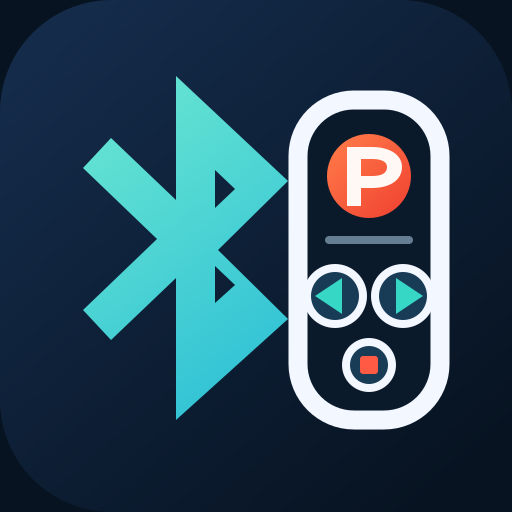
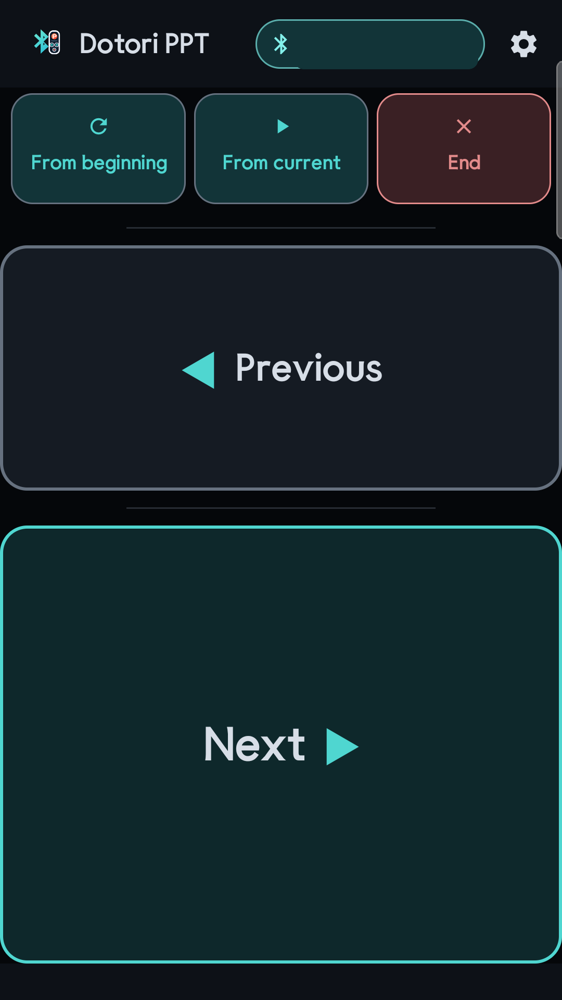
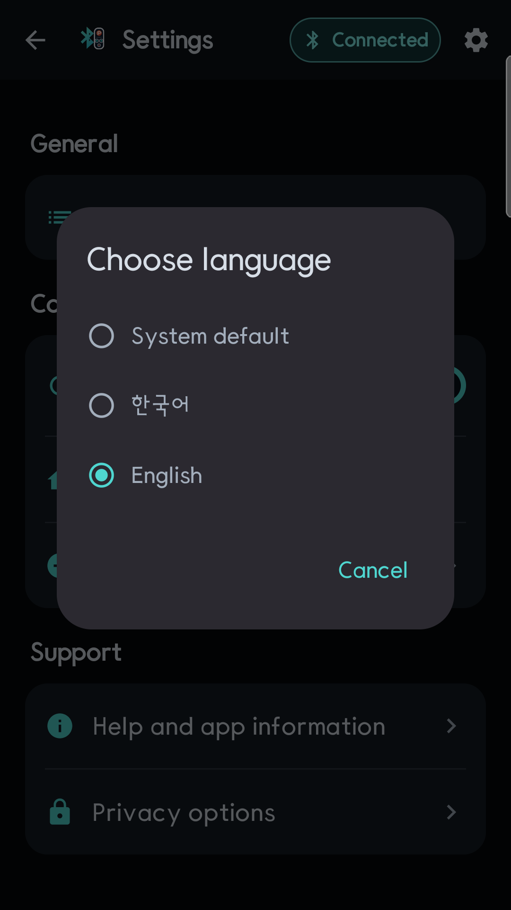
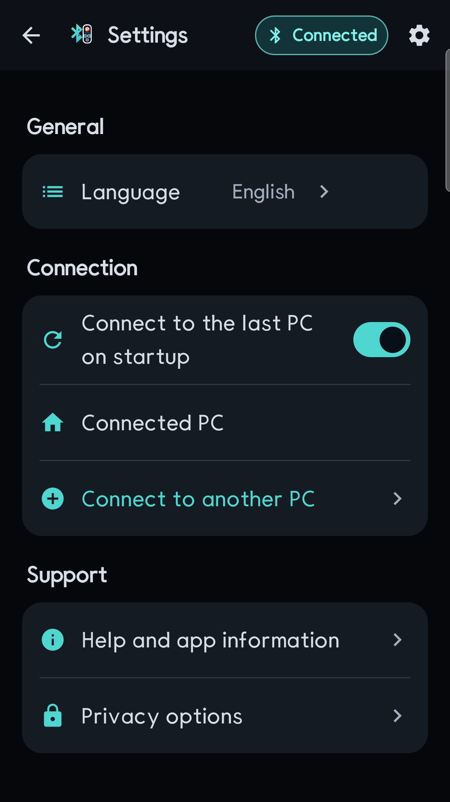
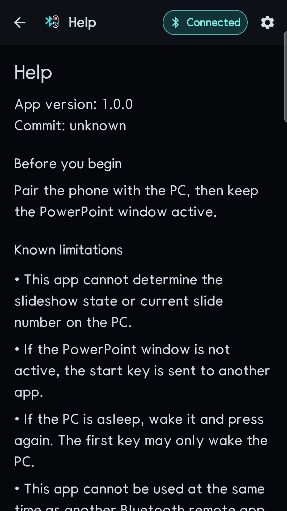
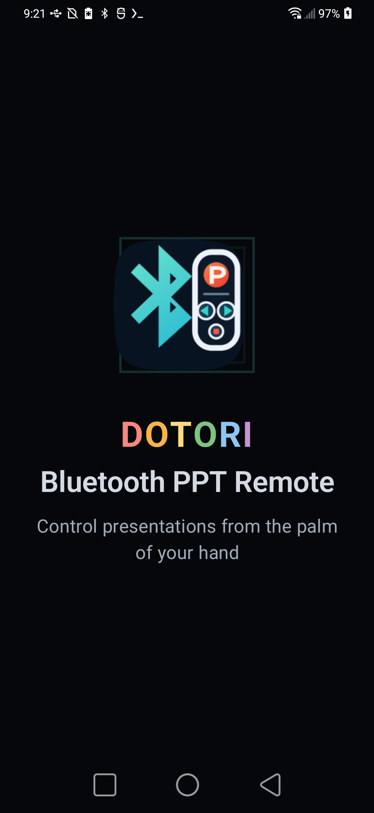

Short answer. Pair the phone with the PC as a standard Bluetooth HID keyboard. A presentation remote only needs five keyboard actions: PageUp, PageDown, F5 followed by Home, Shift+F5, and Escape. Because the PC sees an ordinary keyboard, there is no driver or companion program to install.

Dotori Bluetooth PPT RemoteTurns those five actions into large, fixed controls intended to be used without looking down during a presentation.
A PowerPoint clicker is a small keyboard in disguise. The useful part is not a proprietary presentation protocol; it is sending a deliberately tiny set of keys while keeping the Bluetooth session alive.
The five actions and the keys they send
| Remote action | Keyboard input | Effect |
|---|---|---|
| Previous | PageUp | Move to the previous slide |
| Next | PageDown | Move to the next slide |
| From beginning | F5, then Home | Open the slideshow and force the first slide |
| From current | Shift+F5 | Start from the selected slide |
| End | Escape | Leave the slideshow |
The short delay between F5 and Home is intentional. PowerPoint needs time to create the slideshow window before Home is sent to that window. Sending both reports with no barrier can put Home into the editing window instead.
Pair before the room fills up
Bluetooth HID pairing establishes the phone as a keyboard. Do it before the presentation, confirm that one Next press reaches the PC, and keep the slideshow window active. Once a host has completed the connection and accepted a keyboard report, it can be remembered for a faster reconnect next time.
What to check when a button appears to do nothing
- The wrong window has focus. The keys go to whichever PC application is active.
- The PC was asleep. The first key may wake it without advancing the slide.
- The presentation app uses different shortcuts. Previous, Next, and Escape are widely understood; start commands in this article are PowerPoint behavior.
- The phone lacks the HID Device profile. In that case it cannot advertise itself as a Bluetooth keyboard.
- Power saving stopped the background session. Reopen the remote and reconnect before continuing.
Bluetooth HID is one-way for this job. The phone does not know the current slide number, whether a slideshow window actually opened, or whether another application consumed the key. A remote should report that it sent the key, not invent presentation state it cannot read.
The presenter screen and supporting settings





Dotori Bluetooth PPT Remote exposes only the five slideshow actions above and connects as a standard Bluetooth HID keyboard. More about Dotori Bluetooth PPT Remote